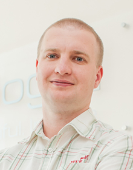

Почекайте
йде завантаження


Команда [bvblogic]
Віталій – вмілий стратег та унікальний інтегратор, що об’єднує навколо себе талановитих людей, які люблять свою справу та роблять її максимально якісно. Ніколи не зупиняється на досягнутому, з радістю ділиться своїм досвідом та знаннями з колегами та навчає з позитивом дивитися на різні ситуації в житті чи роботі. Глибокі знання у сферах ІТ, бізнесу та менеджменту, максимальний рівень відповідальності, відкритість до кожної людини - все це найкраще характеризує Віталія. А ще, він в будь-який час готовий зіграти партію шахів.
Високий професіоналізм, індивідуальний підхід, самовідданість та працьовитість - основні риси Вікторії. Напрацювавши десятки прийомів та моделей та будучи природженим психологом, Віка завжди знає, як безпомилково знайти потрібну людину в команду, яка ідеально підійде для конкретної вакансії. Віка по-справжньому любить те, що робить, і щоденно шукає нові цікаві підходи, опановує найновіші методи та прийоми в роботі. Віка - невичерпне джерело свіжих креативних ідей. Її ціль - зробити життя у компанії більш ніж комфортним, зробити його яскравим! І це у неї безумовно виходить.
Послідовність та стабільність, бездоганні знання технологій, чіткість, точність та пунктуальність - всі ці риси характеризують Богдана як професіонала високого рівня з більш ніж 15-річним досвідом керівництва в сфері ІТ. Богдан завжди ретельно розглядає кожну ситуацію з різних сторін і вміє виявляти приховані можливості чи загрози. Систематизація, впорядкування та автоматизація ключових бізнес-процесів компанії - важливі задачі, в яких йому нема рівних.

Ярослав – унікальна різностороння особистість, завжди готовий до відкритого діалогу на будь-яку тему. Завдяки свої наполегливій праці, він пройшов шлях від рядового програміста до фахівця високого класу. Значний професійний досвід, повага та авторитет серед колег дали можливість Ярославу очолити департамент Веб-розробки, який він щодня наполегливо розвиває.
 Ми в Фейсбуці
Ми в Фейсбуці Ми в Твітері
Ми в Твітері